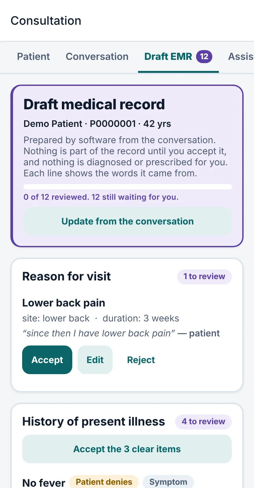
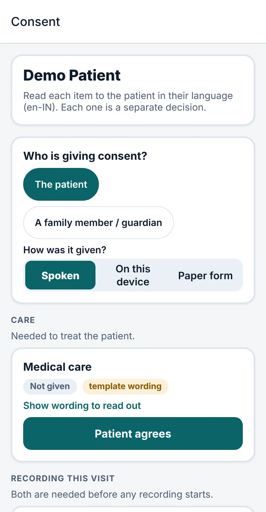
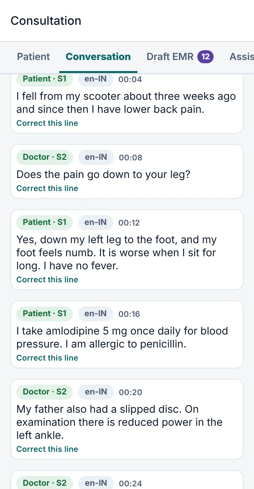
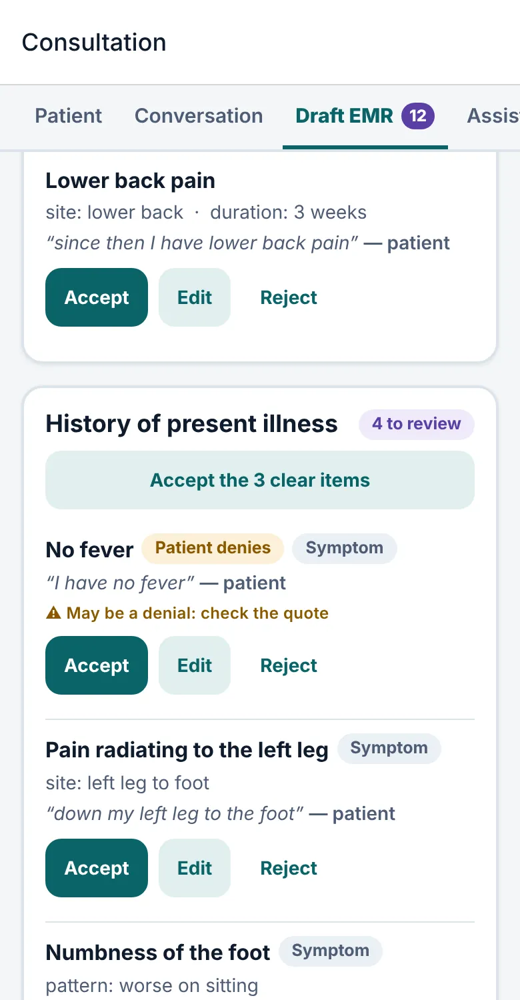
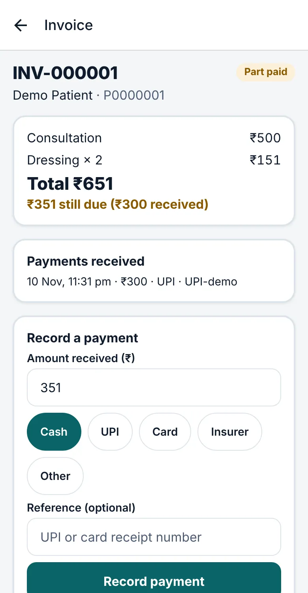

The doctor's note, drafted from the conversation. Decided by the doctor.
AarogyaOS is a clinic system for Indian clinics and hospitals. With the patient's consent it listens to a consultation and proposes a note. Every line shows the words it came from, and nothing is saved to the record until a doctor accepts it.
Early and carefully tested, not yet used with real patients. Where we are

One visit, from consent to invoice
Everything below is a real screen from the app, shown with an invented demo patient.
-

Consent comes first
Each purpose is its own decision, read to the patient in their language. Nothing is recorded without it, and withdrawing takes effect straight away.
-

The doctor talks to the patient
Recording starts only when the doctor presses Start, for an identified patient. The transcript keeps what was heard, and staff can correct a line without losing the original.
-

The note is drafted, not decided
The assistant proposes entries laid out like a clinic note. The doctor accepts, edits or rejects each one.
-

Then the invoice
Billing staff see a finished visit by name and amount only, never the clinical notes. Invoices are numbered, frozen once issued, and can take part payments.
The review step is where the doctor stays in charge
Software output sits next to the record, never inside it. Each proposed line carries the exact words it came from, so the doctor can check it in a glance.
- Suggested
- Purple always means software proposed this and no person has decided yet.
- Patient denies
- Negations stay negations. "I have no fever" is kept as no fever, with a prompt to check the quote.
- Confirmed
- Green means a clinician accepted it. Only then does it become part of the record, marked as software-assisted and confirmed by the doctor.
Questions asked by the doctor are not turned into findings, and uncertain wording such as "maybe a fever" stays uncertain.
Built so the software can be switched off
AarogyaOS never diagnoses, prescribes, orders, refers or discharges. It also never depends on AI to keep a clinic running.
- Every screen works by hand. With AI, speech and the network providers off, a visit is still recorded, prescribed and billed.
- Orders and prescriptions stay with the doctor. If the assistant suggests a test, accepting it creates a draft that the doctor must still place.
- Letters and summaries are assembled from recorded facts, then edited and approved by the doctor. A language model is not asked to write them.
Safety and privacy by design
-
Consent that means something
Eight separate purposes, none implying another: care, recording, transcription, AI processing, keeping audio, and more. Guardians can consent for minors, and withdrawal is effective at once.
-
Each clinic's data stays its own
The database itself refuses to show one organisation another's records, in addition to the checks in the application.
-
A record that does not get rewritten
Corrections add a new version. Signed prescriptions, issued invoices and the audit trail are protected from change, and the audit trail records who did what without storing clinical text.
-
Tamper evidence on prescriptions
A signed prescription is sealed, so an edit made behind the app's back is detectable. This is tamper evidence, not a legally recognised digital signature.
Access is role based and enforced on the server. Two-step sign-in with an authenticator app is available. The project's security document lists the controls in detail, including what is still missing.
The whole clinic, with each person seeing only what they need
One patient identity runs from the front desk to follow-up, so there is no re-keying between systems.
| Role | Works with |
|---|---|
| Doctor | Consultation, note, tests, prescription, sign-off |
| Nurse | Triage, vitals, allergies, vaccines |
| Reception | Registration, queue, check-in, consent |
| Billing | Invoices, payments, refunds, price list. No clinical notes |
| Pharmacy | Signed prescriptions and dispensing |
| Lab and imaging | Their own department's orders and results |
| Administrator | Staff, settings, audit log. No patient records |
Made for conversations that switch languages
Clinic conversations often move between a regional language and English medical terms. The transcript records the language of each utterance, and any mix, as data. Patients are registered with their preferred language, and a visit summary can be translated for the patient, then checked by the doctor before it is approved.
What we can and cannot say yet. Speech runs through a replaceable provider layer, and the Sarvam adapter is built. It has been tried once with a short English clip. We have not yet measured accuracy on Indian languages, code-mixed speech or drug names, and we will not claim any until we have.
Where we are, honestly
AarogyaOS is built and tested, and not yet ready for real patients. This is the current state.
| Area | State |
|---|---|
| Whole workflow, front desk to billing | Built and tested Automated tests cover the API and the app's logic. |
| Phones and the microphone | Not yet proven The app has been rendered in a browser, but the real microphone has never run on a device. |
| Speech and language models | Early Providers are connected and tried once. Accuracy on real clinical audio is unmeasured. |
| Drug interaction and dose checks | Not built Allergy matching is by name only. A licensed drug database is needed. |
| ABDM and medical coding | Not built The FHIR export is plain R4, not ABDM profiles. |
| Hosting | Not deployed A Docker setup exists for trying it out. |
| Clinical, legal and security review | Not done Consent wording, safety log and security still need independent review. |
The full list, with priorities, is in the project's feature status and product backlog documents.
See it with your own clinic in mind
Ask for a walkthrough on a demo clinic with invented patients. We will show the whole visit and tell you plainly what is not finished.